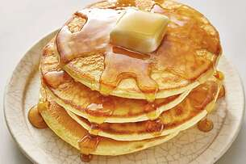

Good Old Fashioned Pancakes

The pancakes your Granma prepared for you every Sunday you visited her
Ingredients
- 1.5 cups all-purpose flour
- 3.5 teaspoons baking powder
- 0.25 teaspoon salt, or more to taste
- 1 tablespoon white sugar
- 1.25 cups milk
Preparation
- In a large bowl, sift together the flour, baking powder, salt and sugar. Make a well in the center and pour in the milk, egg and melted butter; mix until smooth.
- Heat a lightly oiled griddle or frying pan over medium-high heat. Pour or scoop the batter onto the griddle, using approximately 1/4 cup for each pancake. Brown on both sides and serve hot.
Nutrition
158 calories; protein 4.5g; carbohydrates 21.7g; fat 5.9g; cholesterol 37.7mg; sodium 503.6mg.